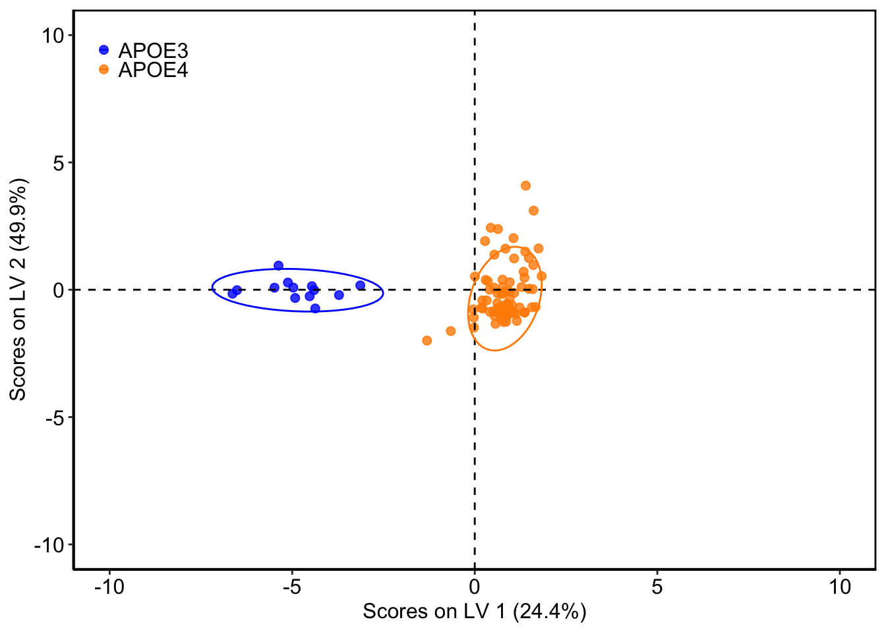
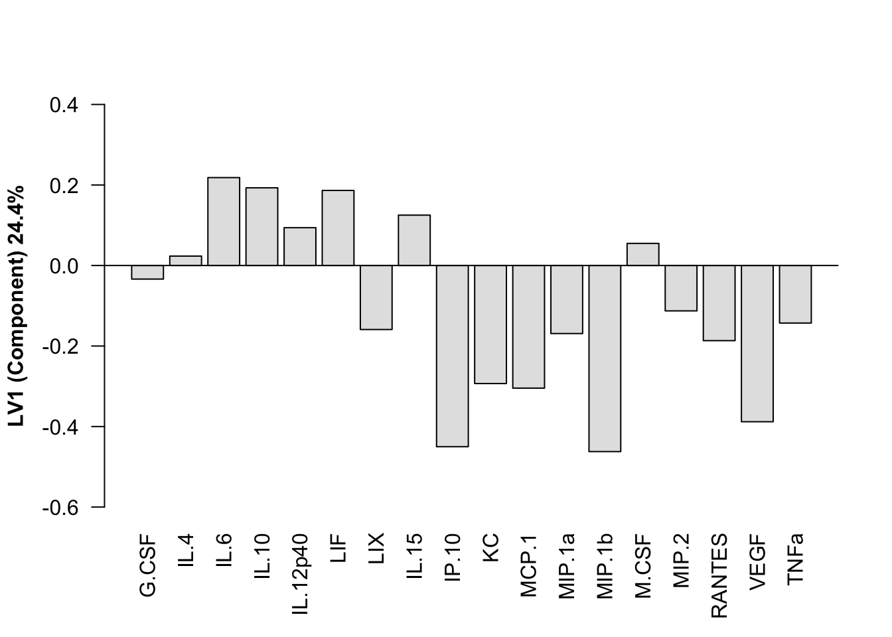

NeuronOnlyAnalysis
rfleeman95
2020-09-05
Last updated: 2020-09-05
Checks: 7 0
Knit directory: APOEmedia/
This reproducible R Markdown analysis was created with workflowr (version 1.6.2). The Checks tab describes the reproducibility checks that were applied when the results were created. The Past versions tab lists the development history.
Great! Since the R Markdown file has been committed to the Git repository, you know the exact version of the code that produced these results.
Great job! The global environment was empty. Objects defined in the global environment can affect the analysis in your R Markdown file in unknown ways. For reproduciblity it’s best to always run the code in an empty environment.
The command set.seed(20200905) was run prior to running the code in the R Markdown file. Setting a seed ensures that any results that rely on randomness, e.g. subsampling or permutations, are reproducible.
Great job! Recording the operating system, R version, and package versions is critical for reproducibility.
Nice! There were no cached chunks for this analysis, so you can be confident that you successfully produced the results during this run.
Great job! Using relative paths to the files within your workflowr project makes it easier to run your code on other machines.
Great! You are using Git for version control. Tracking code development and connecting the code version to the results is critical for reproducibility.
The results in this page were generated with repository version d3a63ef. See the Past versions tab to see a history of the changes made to the R Markdown and HTML files.
Note that you need to be careful to ensure that all relevant files for the analysis have been committed to Git prior to generating the results (you can use wflow_publish or wflow_git_commit). workflowr only checks the R Markdown file, but you know if there are other scripts or data files that it depends on. Below is the status of the Git repository when the results were generated:
Ignored files:
Ignored: .Rproj.user/
Unstaged changes:
Modified: README.md
Note that any generated files, e.g. HTML, png, CSS, etc., are not included in this status report because it is ok for generated content to have uncommitted changes.
These are the previous versions of the repository in which changes were made to the R Markdown (analysis/NeuronOnlyAnalysis.Rmd) and HTML (docs/NeuronOnlyAnalysis.html) files. If you’ve configured a remote Git repository (see ?wflow_git_remote), click on the hyperlinks in the table below to view the files as they were in that past version.
| File | Version | Author | Date | Message |
|---|---|---|---|---|
| Rmd | d3a63ef | rfleeman95 | 2020-09-05 | Publish the first analysis files for myproject |
Set Up
library(ggplot2)
library(factoextra)
library(mixOmics)
library(ropls)
library(dplyr)
library("workflowr")Warning: package 'workflowr' was built under R version 3.6.2##THIS IS PLSDA, I MADE A SEPARATE CODE FOR PLSR
#set domain and file to read
setwd("/Users/BeccaFleeman/Box Sync/Proctor_Lab/Thesis/Thesis_Data/Luminex/20200903_RMF_ApoeAstroAndNeuroMedia")
My_csv<-read.csv("20200903_JustNeuronsMediaLuminex.csv",header=T,stringsAsFactors = F)
#Make a quantity only version, taking out the first and last column which are characters (patient and class)
My_csv_quant <- My_csv[,2:9]PCA
#Get Principal components; Scale is essentially creating z-score (https://www.r-bloggers.com/r-tutorial-series-centering-variables-and-generating-z-scores-with-the-scale-function/)
PC<-prcomp(My_csv_quant,scale=TRUE)
#Get scree plot (this extracts the eigenvalues/variances of dimensions. Eigenvalues correspond to the amount of the variation explained by each PC.)
#The scree plot is a plot of eigenvalues/variances against the number of dimensions
fviz_eig(PC)
#create a class variable of what the classes/conditions in my csv are
#If using genotype:
class <- My_csv$Class[1:93]
unique(class) #shows you all your unique classes[1] "APOE4" "APOE3"#Create a data frame of your principal components with the classes you set
#here, "PC$x" is saying to use the "x" category found in PC; "class" is saying to correspond the class we set in the beginning with the PCs
My_csv_PC<-data.frame(PC$x,class)
#This plots your principal components based on which ones you pick
ggplot(My_csv_PC,aes(x=PC1,y=PC2,col=class))+
theme_set(theme_grey() + theme(legend.key=element_blank())) +
geom_point(size=3,alpha=0.8) +
theme(axis.text.y=element_text(colour="black",size=13))+
theme(axis.text.x=element_text(colour="black",size=13))+
theme(axis.title.y=element_text(size=12))+
theme(axis.title.x=element_text(size=12))+
theme(panel.grid.major = element_blank(),panel.grid.minor = element_blank())+
theme(panel.background = element_blank())+
theme(axis.line = element_line(colour = "black",size=0.5))+
theme(legend.title = element_blank())+
theme(legend.key.size = unit(0,'lines'))+
theme(legend.justification = c(0,1), legend.position = c(0.01,1))+
geom_hline(yintercept = 0, linetype="dashed", color="black",size=0.5)+
geom_vline(xintercept = 0,linetype="dashed",color="black",size=0.5)+
xlim(-10,10)+
ylim(-10,10)+
scale_colour_manual(values = c("blue","darkorange"))Warning: Removed 1 rows containing missing values (geom_point).
#shows loadings; note, if you get rid of the two hashtags below(infront of loading...TRUE and length...PC1), it will sort by #
Loadings_PC1=PC$rotation[,1]
Loadings_PC1=sort(Loadings_PC1,decreasing=TRUE)
PC1Length <- length(Loadings_PC1) #this gives you length (number of variables)
Load_PC1=as.matrix(Loadings_PC1[1:PC1Length])
Load_PC1=t(Load_PC1)
barplot(Load_PC1,col="grey89",las=2,ylim=c(-0.4,0.6))
abline(h=0)Loadings_PC2=PC$rotation[,2]
Loadings_PC2=sort(Loadings_PC2,decreasing=TRUE)
PC2Length <- length(Loadings_PC2) #this gives you length (number of variables)
Load_PC2=as.matrix(Loadings_PC2[1:PC2Length])
Load_PC2=t(Load_PC2)
barplot(Load_PC2,col="grey89",las=2,ylim=c(-0.2,0.6))
abline(h=0)
Loadings_PC3=PC$rotation[,3]
Loadings_PC3=sort(Loadings_PC3,decreasing=TRUE)
PC3Length <- length(Loadings_PC3) #this gives you length (number of variables)
Load_PC3=as.matrix(Loadings_PC3[1:PC3Length])
Load_PC3=t(Load_PC3)
barplot(Load_PC3,col="grey89",las=2,ylim=c(-0.6,0.6))
abline(h=0)
PLSDA
#Turn your class variable from characters (pre/post; APOE3/APOE4) to factors (1/2)
class(class)[1] "character"class<-as.factor(class)
class(class)[1] "factor"#Cross Validation to tell us which number of LV to choose
##**Note, dont have to change based on data, only have to change if you want diff cv parameters
k_folds <- 3 #this is how many folds we will split out data into
n_LV <- 1:5 #this is the range of LV we will try to model with to get an error for
nrepeats <- 1:10 #going to repeat the 3-fold ten times so a total of 30 test sets are taken
nrepeat_results <- matrix(NA, ncol=5,nrow=30) #makes a big matrix of 5 column (one for each # of LV model),
#and 30 rows (for each LV model). 30 = (10 nrepeats) * (3 k_folds)
#matrix will contain error rate of each fold left out for calculation of a Standard Error
error_groups=matrix(1:30, ncol=3, nrow=10,byrow = TRUE)
# This creates a matrix to be written in for each loop.
# It is used to fill in big matrix appropriately with each little error matrices of the inner loop
# You can do it 100x or 10x, to do 100x, nrepeats should be 1:100,
# nrepeat_results matrix should have 5col and 300 row
# error_groups matrix should have 1:300 (3 columns and 100 rows)
# to do 10x, nrepeats should be 1:10
# nrepeat_results matrix should have 5col and 30 row
# error_groups matrix should have 1:30 (3 columns and 10 rows)
for(n in nrepeats){
# First, need to make a list with numbers 1:3 with length of dataframe.
# AKA code below assigns each data sample a random group of which "fold" to be in
folds_i <- sample(rep(1:k_folds, length.out = nrow(My_csv_quant)))
# Next, make a matrix to fill in with error. # of rows is fold #, # of columns are range of LVs tested
cv_error <- matrix(NA, nrow = k_folds, ncol = length(n_LV))
for (k in 1:k_folds) {
test_i <- which(folds_i == k) #chooses which rows will be in the k fold are we doing (will be an int list of 1/3 of the data)
train_set <- My_csv_quant[-test_i, ] #train set is the rows that were not used for test_i (will be an int list of other 2/3 of the data)
test_set <- My_csv_quant[test_i, ] #test set is the random test_i samples chosen but linked with My_csv_quant
condition_test <- class[test_i] #condition here is just what "class" test data was in
condition_train <- class[-test_i] #condition here is what class training data was in
for (i in n_LV){
PLSDA_train_iLVs <- opls(train_set, condition_train, predI = 1, orthoI = (i-1), fig.pdfC=NULL, info.txtC=NULL, scaleC='standard', crossvalI=8)
#this just ran ONE pls on the training set (2/3 of the data). *each iteration will use a diff number of LV (i-1)
predictions <- predict(PLSDA_train_iLVs, test_set)
#this used the PLSDA above to predict the test set condition
cv_error[k,i] <- 1-mean(as.numeric(condition_test==predictions))
#this is telling it to fill out the cv_error matrix that you made with whether it got it right or wrong
}}
nrepeat_results[error_groups[n,],1:5] <- cv_error
#this is putting the cv_error you just got into the nrepeat_results big matrix you made
}
CVrepeated_error_averages <- matrix(NA,ncol=1,nrow=5) #makes a new matrix to average the results of the error for each LV
for (i in 1:ncol(nrepeat_results)){
CVrepeated_error_averages[i,1] <- mean(nrepeat_results[,i])
}
plot(CVrepeated_error_averages[,1],main="Classification Error, 3-fold CV repeated 10 times", xlab="Latent Variable #", ylab="Classification error rate",ylim=c(0,1))
lines(n_LV, CVrepeated_error_averages[,1], lwd = 2)#CHANGE BASED ON CV!!!
#do pls in ropls, the pred 1 is always 1, orthoI is the number of orthogonalized LV that you want.
#if you set orthoI=0, you will be doing 1 LV. Leave crossvalI at 8, unsure why though
oplsda<-opls(My_csv_quant,y=class,predI=1,orthoI=1,crossvalI=6)OPLS-DA
93 samples x 8 variables and 1 response
standard scaling of predictors and response(s)
R2X(cum) R2Y(cum) Q2(cum) RMSEE pre ort pR2Y pQ2
Total 0.498 0.872 0.803 0.126 1 1 0.05 0.05#if using condition instead of class, must do PLS-DA not opls
#oplsda<-opls(My_csv_quant,y=class,predI=1,orthoI=1,crossvalI=6)
#SCORES PLOT:
Scores <- getScoreMN(oplsda)
oScores <- oplsda@orthoScoreMN
Scores_Class <- data.frame(Scores, oScores, My_csv$Class)
colnames(Scores_Class)<- c("LV1", "o1", "Class") #add as many o's as needed here
ggplot(Scores_Class,aes(x=LV1,y=o1,col=Class))+
#theme_set(theme_gray() + theme(legend.key=element_blank())) +
geom_point(size=2,alpha=0.8)+
theme(axis.text.y=element_text(colour="black",size=12))+
theme(axis.text.x=element_text(colour="black",size=12))+
theme(axis.title.y=element_text(size=12))+
theme(axis.title.x=element_text(size=12))+
theme(panel.grid.major = element_blank(), panel.grid.minor = element_blank())+
theme(panel.background = element_blank())+
theme(axis.line = element_line(colour = "black",size=0.5))+
theme(legend.title=element_blank())+
theme(legend.key.size = unit(0, 'line'))+ ##
theme(legend.justification=c(0,1), legend.position=c(0.02,.98))+
theme(legend.text=element_text(size=12))+
scale_colour_manual(values = c("blue","darkorange"))+ #need to label accordingly
geom_hline(yintercept=0, linetype="dashed",
color = "black", size=0.5)+
geom_vline(xintercept = 0, linetype="dashed",
color = "black", size=0.5)+
stat_ellipse(type = "t")+ #default 95% confidence ellipse
xlim(-8,8)+
ylim(-8,8)+
xlab("Scores on LV 1 (33.7%)") + #change this to match input LV!!!
ylab("Scores on LV 2 (49.9%)")+ #change this to match input LV!!!
theme(plot.title = element_blank()) +
theme( panel.background = element_rect(colour = "black", size=1))
#Get the LV Loadings:
#to add more stuff to plot, use ?par
Load<-getLoadingMN(oplsda)
Loadsort<-sort(Load,decreasing=TRUE)
Loading<-t(Load)
barplot(Loading, col="grey89", las=2, ylim=c(-0.6,0.4), ylab="LV1 (Component) 33.7%", font.lab=2)
abline(h=0)
VIP<-getVipVn(oplsda)
VIPsort=sort(VIP,decreasing=TRUE)
barplot(VIPsort, col="grey89", las=2, ylim=c(0,2), main= "VIPs", cex.main=1.5, ylab="LV1 (Component) 33.7%", font.lab=2)
abline(h=1)
abline(h=0)#save
sessionInfo()R version 3.6.1 (2019-07-05)
Platform: x86_64-apple-darwin15.6.0 (64-bit)
Running under: macOS Catalina 10.15.5
Matrix products: default
BLAS: /Library/Frameworks/R.framework/Versions/3.6/Resources/lib/libRblas.0.dylib
LAPACK: /Library/Frameworks/R.framework/Versions/3.6/Resources/lib/libRlapack.dylib
locale:
[1] en_US.UTF-8/en_US.UTF-8/en_US.UTF-8/C/en_US.UTF-8/en_US.UTF-8
attached base packages:
[1] parallel stats graphics grDevices utils datasets methods
[8] base
other attached packages:
[1] workflowr_1.6.2 dplyr_0.8.3 ropls_1.16.0
[4] Biobase_2.44.0 BiocGenerics_0.30.0 mixOmics_6.8.3
[7] lattice_0.20-38 MASS_7.3-51.4 factoextra_1.0.5
[10] ggplot2_3.2.1
loaded via a namespace (and not attached):
[1] tidyselect_0.2.5 xfun_0.9 purrr_0.3.2
[4] reshape2_1.4.3 colorspace_1.4-1 vctrs_0.2.0
[7] htmltools_0.3.6 yaml_2.2.0 rlang_0.4.0
[10] ggpubr_0.2.3 later_0.8.0 pillar_1.4.2
[13] glue_1.3.1 withr_2.1.2 RColorBrewer_1.1-2
[16] matrixStats_0.55.0 lifecycle_0.1.0 plyr_1.8.4
[19] stringr_1.4.0 ggsignif_0.6.0 munsell_0.5.0
[22] gtable_0.3.0 evaluate_0.14 labeling_0.3
[25] knitr_1.24 httpuv_1.5.2 rARPACK_0.11-0
[28] Rcpp_1.0.2 corpcor_1.6.9 promises_1.0.1
[31] scales_1.0.0 backports_1.1.4 fs_1.3.1
[34] RSpectra_0.15-0 gridExtra_2.3 ellipse_0.4.1
[37] digest_0.6.20 stringi_1.4.3 ggrepel_0.8.1
[40] grid_3.6.1 rprojroot_1.3-2 tools_3.6.1
[43] magrittr_1.5 lazyeval_0.2.2 tibble_2.1.3
[46] crayon_1.3.4 whisker_0.4 tidyr_1.0.0
[49] pkgconfig_2.0.2 zeallot_0.1.0 Matrix_1.2-17
[52] assertthat_0.2.1 rmarkdown_2.3 R6_2.4.0
[55] igraph_1.2.4.1 git2r_0.27.1 compiler_3.6.1